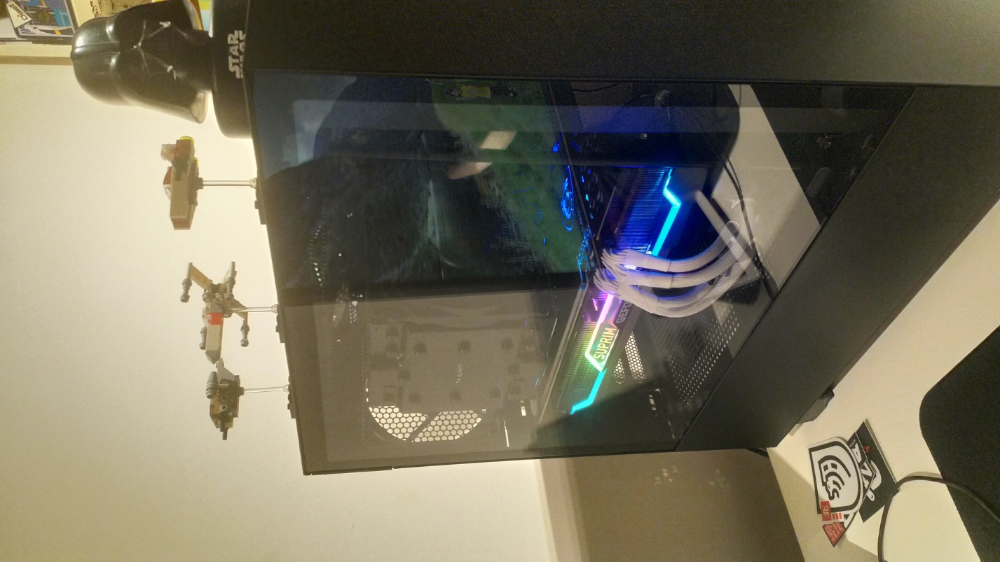

It's new tech!
I finally came up on the best excuse to upgrade my computer. My very generous employer, ITQ, gave us the opportunity to upgrade our home office and that brought me the base for a new system.
The specs I finally settled on are built around PCI Gen 4 (future-proof a bit 😀) support which comes down to the following list of parts:
- Asus TUF Gaming X570-Plus
- AMD Ryzen 7 5800X
- Samsung 980 Pro 500GB
- 32GB G.Skill DDR4 3600MHz CL16 RAM
- Corsair RM750x power supply
To hold all the stuff I went with an NZXT H510 ATX case.
Because the 5800X comes without a cooler, I went with a Dark Rock Pro 4. It’s really unweildy but it’s an amazing cooler that is pretty much silent.
The build is almost complete but it’s missing a big component, a GPU. The market for these is in complete shambles for months now with outrageous prices and non-existent inventory. Through a super lucky break I managed to find an MSI RTX3070 Suprim 8G and I’ll admit that I did overpay a little bit but nowhere near the silly 1000,- scalper prices (I should have bought a lottery ticket instead of a GPU…).
So with all the parts sourced and ready to build I sat down on a saturday morning to put it all together. The build went without issue and I didn’t even cut myself on the IO-shield of the motherboard. Boy had I overlooked one important thing…
After carefully looking at QVL lists to match the memory with the board and making sure all the parts would actually fit in the case I completely forgot about the BIOS… The X570 board I picked came with an older BIOS on it that did not yet have support for Ryzen 5000 series CPUs 💀
So there I was, everything all set, staring at a bright orange error LED on the motherboard when I powered it on… Luckily a friend was willing to take his 3700X CPU out of his PC and put it on my board so that we could flash an updated BIOS with the proper CPU support and everything was fine (after I had basically built the PC twice on the same day…)

This will give me enough horsepower for a good while again and it even comes with some fancy rainbow RGB 👨💻